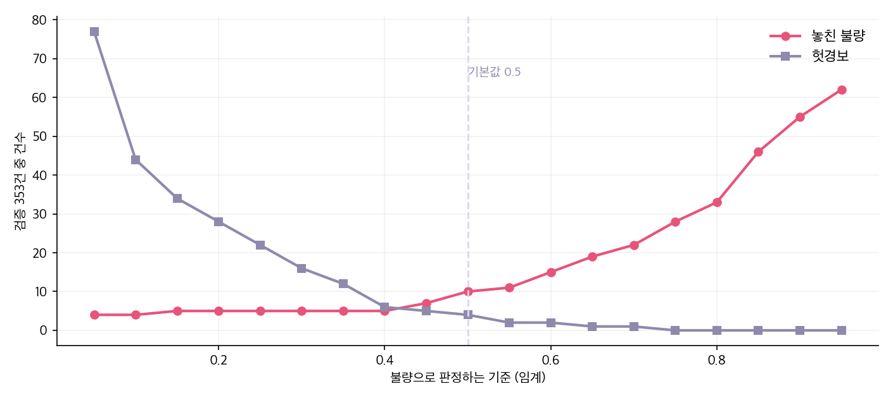

WEEK 2 · DAY 4TABULAR ML
공정 데이터로
불량 미리 잡기
/
AGENDA일정
오늘의 일정
CH0
데이터를 안 보내고
표를 통째로 올리면 유출이다. 모양만 보내고 코드를 받는다.
CH1
전처리
결측 · 이상치 · 글자 열. 손대는 순서가 정해져 있다.
CH2
예측과 검증
정확도 하나로 속지 않는다. 놓친 불량을 센다.
CH3
웹 앱에 붙이기
만든 모듈을 화면 뒤에 놓는다.
기준
오늘의 모든 수치는 공정 데이터 1,412건을 실제로 돌려 뽑은 것이다.
00
CHAPTER 00
원본 없이 코드 받기
유출스키마가짜 표본
/
CH0문제
엑셀 1,412건과 반출 금지
→
도구를 못 쓰는 것이 아니다. 데이터를 안 보내면서 도구를 쓰는 방법이 있다.
오늘
데이터는 내 노트북에서만 돌고, 밖으로 나가는 것은 표의 모양뿐이다.
/
CH0기준
스키마와 값
기준
열 이름 · 자료형 · 범위 · 결측 수면 코드를 만들기에 충분하다. 값은 한 줄도 필요 없다.
/
CH0판단
반출의 경계
| 붙여 넣는 것 | 반출인가 | 왜 |
|---|---|---|
| 열 이름 목록 | 아니다 | 이름은 값이 아니다 |
| 자료형 · 결측 수 | 아니다 | 세어 본 결과다 |
| 최솟값 · 최댓값 · 평균 | 경우에 따라 | 한 건짜리 표라면 그 값이 곧 원본이다 |
| 한 행이라도 그대로 | 반출이다 | 배치번호와 설비호기가 들어 있다 |
| 엑셀 파일 첨부 | 반출이다 | 더 볼 것도 없다 |
★
평균과 범위도 조심한다. 데이터가 적으면 요약이 원본을 그대로 드러낸다.
→
헷갈리면 기준은 하나다 — 이 글만 보고 특정 배치를 알 수 있는가.
기준
판단이 애매하면 보내지 않는다. 안 보내도 코드는 나온다.
/
CH0코드
info() · describe() 의 출력
한 줄로 요약을 만든다
# 값은 안 나오고 모양만 나온다
df.info()
df.describe()
df.isna().sum()나온 것
RangeIndex: 1412 entries
소성온도 1412 non-null float64
입도 1300 non-null float64
수분율 1339 non-null float64
성형압력 1412 non-null float64이 글자만 Codex 에 붙여 넣는다
→
결측이 어디에 몇 개인지, 값의 범위가 어디까지인지가 나온다. 전처리 코드를 짜는 데 필요한 것은 이게 전부다.
★
더 안전하게 하려면 같은 모양의 가짜 표를 만들어 보낸다. 열 이름만 같고 값은 난수다.
방법
info() 와 describe() 의 출력만 붙여 넣는다. 표 자체는 열지도 않는다. /
CH0함정
에러 메시지 · 출력 · 화면 캡처
1
에러 메시지를 그대로 붙일 때 —
KeyError: B00115 처럼 배치번호가 그대로 들어 있다.2
출력을 통째로 붙일 때 —
df.head() 결과에는 값이 다 있다.3
화면을 캡처해 올릴 때 — 글자가 아니라 그림이어도 값은 값이다.
붙이기 전에 지운다
# 에러만 남기고 값은 지운다
KeyError: '???' # B00115 → ???
# 출력은 모양만
df.dtypes # head() 말고습관
붙여 넣기 전에 한 번 읽는다. 값이 보이면 지우고 붙인다.
/
CH0프롬프트
역할 · 데이터 · 할 일 · 형식
네 칸으로 적는다
# 역할
너는 공정 데이터로 불량을 예측하는 코드를 쓰는 사람이다.
# 데이터 (값은 못 준다. 모양만 준다)
행 1412 · 열 11. 목표는 양품여부 (1 양품 · 0 불량, 불량 265건)
소성온도 float 결측0 / 입도 float 결측112 / 수분율 float 결측73
성형압력 float 결측0 범위 15.9~999.0 / 설비호기 문자 A~D
# 할 일
전처리하고 모델을 학습해 불량을 잡는 코드를 쓴다.
# 형식
실행 가능한 파이썬 한 벌. 데이터를 출력하는 줄은 넣지 마라.★
「값은 못 준다」를 먼저 적는다. 안 적으면
df.head() 를 찍는 코드를 준다.→
성형압력 범위에 999 가 있다고 알려 주면 이상치 처리를 먼저 넣어 준다.
요령
데이터를 못 준다는 것을 제약이 아니라 조건으로 적는다. 그러면 그 조건에 맞는 코드가 온다.
/
CH0방법
난수로 만든 sample.csv
모양만 같은 표를 만든다
# 열 이름과 자료형만 그대로
fake = pd.DataFrame({
'소성온도': np.random.uniform(750, 950, 10),
'입도': np.random.uniform(5, 20, 10),
'설비호기': np.random.choice(list('ABCDEF'), 10),
'양품여부': np.random.choice([0, 1], 10)})
fake.to_csv('sample.csv', index=False)→
이 파일은 마음 놓고 올릴 수 있다. 원본과 열 이름만 같고 값은 난수다.
★
Codex 가 실제로 돌려 보며 코드를 고칠 수 있어 결과가 더 낫다.
✕
값의 분포는 다르다. 이상치 처리는 따로 알려 줘야 한다.
방법
모양만 있는 글보다 돌려 볼 수 있는 가짜 표가 낫다. 원본은 그대로 둔다.
01
CHAPTER 01
전처리
결측이상치글자 열누수
/
CH1시작
shape · dtypes · isna()
세 줄이면 표의 성격이 나온다
df.shape # 몇 행 몇 열
df.dtypes # 숫자인가 글자인가
df.isna().sum() # 어디가 비었나(1412, 11)
→
행 1,412 · 열 11. 이 정도면 노트북에서 다 돈다.
✕
불순물과 입도가 글자로 읽혔다. 숫자여야 하는데 아니다.
→
입도 112건 · 수분율 73건이 비었다. 합쳐 185건, 전체의 13%다.
시작
숫자여야 할 열이 글자로 읽혔다면 읽는 방법부터 잘못된 것이다.
/
CH1실측
쉼표 하나가 글자로 만든 열
그냥 읽으면
df = pd.read_csv('batch_quality.csv')
df['불순물'].head(3)['1,024', '800', '871'] ← 글자다
옵션을 주면
df = pd.read_csv('batch_quality.csv',
thousands=',',
na_values=['N/A', '-'])1024, 800, 871 ← 숫자다
→
쉼표 하나 때문에 불순물 열 전체가 글자가 됐다. 평균도 못 낸다.
★
N/A 와 - 도 결측으로 읽어야 한다. 안 그러면 글자 「N/A」 가 값으로 들어앉는다.함정
읽기가 틀리면 그 뒤가 전부 틀린다. dtypes 로 먼저 확인한다.
/
CH1순서
읽기 → 이상치 → 결측 → 인코딩 → 분할
순서
읽고 · 고치고 · 메우고 · 펴고 · 나눈다. 나누기를 마지막에 두면 검증 데이터가 섞인다.
/
CH1실측
성형압력 999 가 18건
성형압력 분포 · 배치 1,412건

→
999 를 그대로 두면 평균이 36.5 로 잡힌다. 빼면 실제 최대가 31.4 다.
★
센서가 못 읽었을 때 넣는 값이다. 숫자로 보이지만 결측이다.
함정
평균 · 표준편차가 이상하면 먼저 히스토그램을 그린다. 숫자만 보면 못 찾는다.
/
CH1실측
설비 여섯 대, 스물네 가지 표기
✕
앞뒤 공백과 대소문자가 섞여 있다. 사람 눈에는 같아 보인다.
→
다듬지 않고 펴면 열이 30개가 된다. 다듬으면 12개다.
순서
글자 열은 펴기 전에 다듬는다. 순서를 바꾸면 쓸모없는 열이 스무 개 생긴다.
/
CH1변환
get_dummies
한 줄이면 된다
X = pd.get_dummies(X,
columns=['설비호기', '교대조'],
drop_first=True)8열 → 12열
| 전 | 후 |
|---|---|
| 설비호기 = A | 설비호기_B 0 · 설비호기_C 0 · … |
| 설비호기 = C | 설비호기_B 0 · 설비호기_C 1 · … |
| 교대조 = night | 교대조_night 1 |
→
값 하나가 열 여러 개의 0과 1 로 바뀐다.
★
drop_first=True 로 한 열을 뺀다. 나머지가 다 0이면 그것이라 없어도 알 수 있다.변환
글자를 숫자로 바꾸는 일이다. 순서가 없는 값이라 1·2·3으로 매기면 안 된다.
/
CH1선택
입도 112건 · 수분율 73건
| 방법 | 언제 쓰나 | 이 데이터에서는 |
|---|---|---|
| 행을 버린다 | 결측이 적고 데이터가 많을 때 | 185건이 빠진다 — 13% |
| 중앙값으로 메운다 | 값이 한쪽으로 쏠렸을 때 | 입도 12.0 · 수분율 1.2 |
| 평균으로 메운다 | 고르게 퍼졌을 때 | 이상치에 끌려간다 |
| 따로 표시한다 | 결측 자체가 뜻이 있을 때 | 「측정 안 함」 열을 하나 더 |
→
정답이 없다. 왜 비었는지를 알면 고르기 쉬워진다.
★
메운 값은 학습 데이터에서만 구한다. 검증까지 합쳐 구하면 검증 데이터가 섞인다.
기준
13%를 버릴 수 있으면 버리고, 아까우면 메운다. 메웠다는 사실을 기록에 남긴다.
/
CH1실측
소성온도 분포와 불순물 산점도
공정 데이터 1,412건

→
소성온도가 낮거나 높으면 불량이 는다. 가운데가 안전하다.
→
두 값을 같이 놓으면 불량이 몰린 자리가 보인다. 한 열씩 보면 안 보인다.
순서
모델을 만들기 전에 그린다. 그림에서 안 보이는 것은 모델도 못 찾는다.
/
CH1실측
StandardScaler 가 필요한 모델
| 스케일링 안 함 | 스케일링 함 | |
|---|---|---|
| 로지스틱 · 정확도 | 0.909 | 0.904 |
| 로지스틱 · 불량 재현율 | 0.636 | 0.667 |
| 랜덤포레스트 | 필요 없다 | 필요 없다 |
→
소성온도는 850 언저리, 수분율은 1.2 언저리다. 크기가 700배 다르다.
→
로지스틱은 값의 크기에 끌려가므로 맞춰 준다 — 재현율 0.636 → 0.667.
★
나무 계열은 크기를 안 본다. 「820보다 큰가」만 따지므로 맞출 필요가 없다.
기준
거리를 재는 모델은 맞추고, 갈라 나가는 모델은 안 맞춘다.
/
CH1기준
비율을 지켜 가르는 stratify
한 줄로 가른다
Xtr, Xte, ytr, yte = train_test_split(
X, y, test_size=0.25,
random_state=42,
stratify=y)학습 1,059 · 검증 353
→
학습 18.8% · 검증 18.7% 로 불량 비율이 같게 갈렸다.
✕
stratify 를 빼면 검증에 불량이 몰리거나 거의 없을 수 있다. 그러면 성적이 운에 달린다.★
random_state 를 고정해야 다시 돌려도 같은 결과가 나온다.기준
적은 쪽이 있는 데이터는 반드시 비율을 지켜 가른다.
/
CH1함정
정확도 1.000 이라는 경고
함정
결과가 너무 좋으면 먼저 의심한다. 예측 시점보다 뒤에 나오는 열이 섞였는지 본다.
02
CHAPTER 02
예측과 검증
모델 둘정확도의 함정임계
/
CH2구분
로지스틱 회귀와 랜덤포레스트
선택
설명이 필요하면 로지스틱, 성적이 필요하면 랜덤포레스트다. 먼저 둘 다 돌려 본다.
/
CH2실측
로지스틱 0.904 · 랜덤포레스트 0.966
| 정확도 | 불량 재현율 | 불량 정밀도 | |
|---|---|---|---|
| 전부 양품이라 찍기 | 0.813 | 0.000 | — |
| 로지스틱 회귀 | 0.904 | 0.667 | 0.786 |
| 랜덤포레스트 | 0.966 | 0.864 | 0.950 |
✕
아무것도 안 하고 「전부 양품」이라 찍어도 정확도 0.813 이다. 불량이 18.8% 뿐이라 그렇다.
→
봐야 할 것은 불량 재현율 — 있는 불량 중 몇 개를 잡았나다.
기준
정확도 하나로 고르지 않는다. 적은 쪽을 얼마나 잡았는지로 고른다.
/
CH2실측
학습 1.000 · 검증 0.921
✕
깊이를 안 막으면 학습 데이터를 통째로 외운다. 학습 1.000 인데 검증은 0.921 이다.
→
깊이를 4로 막으면 학습 성적이 내려가는 대신 둘의 차이가 0.006 으로 준다.
★
랜덤포레스트도 학습은 1.000 이다. 다만 나무 300그루의 표를 모아 검증이 덜 떨어진다.
신호
학습과 검증의 차이가 크면 외운 것이다. 학습 성적만 보면 못 알아챈다.
/
CH2검증
교차검증 5겹 · 0.936 ± 0.004
다섯 조각으로 갈라 돌린다
from sklearn.model_selection import cross_val_score
cv = cross_val_score(model, X, y, cv=5)
print(cv.mean(), cv.std())0.943 0.933 0.933 0.933 0.936
평균 0.936 · 흔들림 0.004
→
한 번 나눈 성적은 어떻게 갈렸는지에 따라 달라진다.
→
다섯 번 재서 평균과 흔들림을 같이 본다.
★
흔들림 0.004 면 어떻게 갈라도 비슷하다는 뜻이다. 이 값이 크면 데이터가 모자란 것이다.
기준
성적은 숫자 하나가 아니라 평균과 흔들림으로 말한다.
/
CH2실측
놓친 불량 9건 · 헛경보 3건
판단
놓친 불량과 헛경보는 값이 다르다. 숫자 하나로 못 고르고 현장이 정해야 한다.
/
CH2실측
임계 0.5 · 0.3 · 0.2
| 임계 | 불량 재현율 | 정밀도 | 놓친 불량 | 헛경보 |
|---|---|---|---|---|
| 0.50 | 0.864 | 0.950 | 9건 | 3건 |
| 0.30 | 0.909 | 0.811 | 6건 | 14건 |
| 0.20 | 0.924 | 0.693 | 5건 | 27건 |
→
임계를 0.5 에서 0.2 로 낮추면 놓친 불량이 9건 → 5건 으로 준다.
✕
대신 헛경보가 3건 → 27건 으로 는다. 아홉 배다.
★
모델은 그대로다. 바꾼 것은 어디서 자를지뿐이다.
선택
놓친 불량 한 건의 값과 헛경보 한 건의 값을 돈으로 환산해 임계를 정한다.
/
CH2실측
임계 0.05 부터 0.95 까지
검증 353건 · 임계를 0.05 부터 0.95 까지

→
왼쪽으로 갈수록 놓친 불량은 줄고 헛경보는 는다. 둘은 같이 못 줄인다.
★
두 선이 만나는 곳이 답이 아니다. 어느 쪽이 더 비싼지가 답을 정한다.
선택
놓친 불량 한 건이 헛경보 열 건보다 비싸면 임계를 왼쪽으로 옮긴다.
/
CH2실측
class_weight='balanced'
| 설정 | 불량 재현율 | 불량 정밀도 |
|---|---|---|
| 그대로 | 0.864 | 0.950 |
| class_weight='balanced' | 0.818 | 0.915 |
✕
적은 쪽에 힘을 실었는데 재현율이 오히려 내려갔다. 0.864 → 0.818.
→
이 데이터는 불량이 18.8% 로 그렇게 치우치지 않았다. 손댈 필요가 없었다.
★
적은 쪽이 1~2% 일 때 쓴다. 그때는 안 쓰면 아예 못 잡는다.
교훈
좋다는 설정을 다 켜지 않는다. 하나 바꾸고 재고, 나빠지면 되돌린다.
/
CH2실측
소성온도 0.513 · 불순물 0.160
→
어느 값을 먼저 손봐야 하는지 순서를 준다.
✕
인과가 아니다. 온도를 바꾸면 불량이 준다는 뜻은 아니다. 그것은 실험으로 확인한다.
쓰임
중요도는 어디부터 볼지 정하는 데 쓴다. 원인을 말하는 값이 아니다.
03
CHAPTER 03
웹 앱에 붙이기
모듈로 떼기화면사내 적용
/
CH3정리
엑셀에서 판정 화면까지
→
Codex 는 가운데 두 칸의 코드를 만들어 줄 뿐이다. 데이터는 만지지 않는다.
★
앱에 들어가는 것은 model.pkl 과 판정 코드다. 원본 표는 넣지 않는다.
구조
데이터는 왼쪽에 머물고 오른쪽으로는 결과만 간다.
/
CH3구조
model.pkl 로 갈라 두기
한 번 돌려 파일로 남긴다
# 학습해서 저장 — 한 번만
model.fit(X_train, y_train)
joblib.dump(model, 'model.pkl')앱에서는 불러 쓰기만
# 판정 — 배치마다
model = joblib.load('model.pkl')
p = model.predict_proba(row)[0][0]
판정 = '불량 위험' if p >= 0.3 else '정상'→
학습은 느리고 한 번, 판정은 빠르고 매번이다. 이 둘을 갈라 둔다.
★
앱에는 모델 파일과 판정 코드만 들어간다. 원본 표는 안 들어간다.
구조
학습과 판정을 갈라 두면 데이터를 앱에 안 넣고도 판정이 된다.
/
CH3화면
판정 화면 한 장
화면
판정만 내지 않는다. 왜 그렇게 봤는지를 같이 낸다. 근거가 없으면 현장이 안 쓴다.
/
CH3운영
재학습의 신호
1
설비나 원료가 바뀌었을 때 — 배운 것과 다른 상황이 된다.
2
맞히는 비율이 내려갈 때 — 매달 지난달 판정과 실제 결과를 견줘 본다.
3
데이터가 크게 늘었을 때 — 1,412건에서 5,000건이 되면 다시 배울 값이 있다.
견주는 코드도 같이 만들어 둔다
# 지난달 판정과 실제 결과를 맞춰 본다
맞힌 비율 = (지난달판정 == 실제결과).mean()
print(맞힌 비율) # 0.9 아래로 내려가면 다시 학습운영
모델은 낡는다. 다시 잴 방법을 처음부터 같이 만들어 둔다.
/
CH3적용
사내 도구로의 이식
| 오늘 쓴 것 | 사내에서는 | 바뀌는가 |
|---|---|---|
| Codex 로 코드 만들기 | VS Code + 사내 LLM API | 도구만 바뀐다 |
| pandas · scikit-learn | 그대로 | 안 바뀐다 |
| 모델 파일 (model.pkl) | 그대로 | 안 바뀐다 |
| 웹 앱 띄우기 | 사내 배포 환경 | 도구만 바뀐다 |
| 원본 데이터 | 한 번도 밖으로 안 보냈다 | 옮길 것이 없다 |
★
데이터가 처음부터 안 나갔다. 그래서 사내로 옮길 때 다시 검토할 것이 없다.
→
바뀌는 것은 코드를 만들어 주는 도구와 앱을 띄우는 곳뿐이다. 전처리 · 모델 · 판정은 그대로다.
적용
오늘 배운 것 중 도구는 바뀌고 방법은 남는다. 그래서 도구가 막혀도 일은 된다.
/
LAB실습
내 엑셀로 처음부터 끝까지
붙여 넣을 요약을 만든다
# 내 엑셀을 읽고
df = pd.read_excel('내파일.xlsx')
# 모양만 찍는다
df.info()
df.describe()1
내 엑셀에서 모양만 뽑아 낸다. 값이 찍히지 않는지 눈으로 확인한다.
2
네 칸 프롬프트에 그 모양을 넣고 전처리 코드를 받는다.
3
내 노트북에서 돌려 그림 두 장을 그린다.
4
모델을 학습하고 놓친 불량이 몇 건인지 센다.
5
임계를 바꿔 가며 놓친 불량과 헛경보를 표로 적는다.
확인
한 번이라도 값이 화면에 찍혔다면 붙여 넣기 전에 지운다.
/
CH3정리
오늘의 한 줄
보안
모양만 보낸다
열 이름 · 자료형 · 범위 · 결측 수. 값은 한 줄도 밖으로 보내지 않는다.
전처리
순서가 있다
읽고 · 고치고 · 메우고 · 펴고 · 나눈다. 나누기를 마지막에 두면 검증 데이터가 섞인다.
검증
적은 쪽을 본다
전부 양품이라 찍어도 0.813 이다. 놓친 불량을 센다.
★
정확도 1.000 이 나오면 누수를 먼저 의심한다. 예측 시점보다 뒤에 나오는 열이 섞였는지 본다.
결론
도구가 막혀도 데이터를 안 보내고 일하는 방법이 있다. 오늘 만든 것이 그대로 사내로 간다.